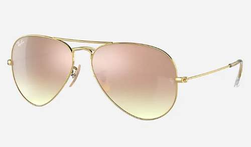
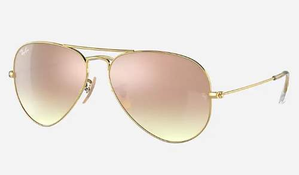

Lentes de sol
 

Marcos
.jpg)
.jpg)
.jpg)
Existen una variedad de marcos de lentes de lectura tanto para mujeres como para hombres, diseñados para satisfacer diferentes gustos y necesidades. Para las mujeres, los marcos pueden variar desde estilos elegantes y delicados con detalles decorativos hasta opciones más modernas y audaces con colores vibrantes. Por otro lado, los hombres pueden encontrar marcos clásicos y sobrios, así como opciones más deportivas o contemporáneas. Además, los materiales utilizados también varían, desde acetato ligero y metal resistente hasta madera para quienes buscan un toque más natural. En resumen, la diversidad de marcos disponibles permite a cada persona encontrar el estilo que mejor se adapte a su personalidad y preferencias.
Bifocales
Los lentes multifocales son una opción de corrección visual que combina diferentes potencias en una sola lente. Son ideales para personas con problemas de visión tanto de cerca como de lejos, como la presbicia. Estos lentes cuentan con áreas específicas para la visión cercana, intermedia y lejana, lo que permite una visión nítida en diversas distancias sin necesidad de cambiar de gafas. Aunque la adaptación puede llevar tiempo y algunos pueden experimentar distorsión al principio, los lentes multifocales ofrecen comodidad y versatilidad, simplificando la vida de quienes requieren corrección visual para diferentes situaciones.